来源：https://g9b7q6p1o2.feishu.cn/docx/BtiUdUpFloGapRxJY66chrb8nCb
小红书蕴藏巨大商机，无论是接广告还是引流，都能让你的生意更上一层楼！
如果你还没搞懂小红书底层玩法，很多机会失之交臂！
为啥由我来分享？简单自我介绍下：
我是哈默，世界500强新媒体培训师，出版3本新媒体书，做过10年自媒体，遍布微博、豆瓣、今日头条、知乎、抖音、小红书、视频号等几乎所有平台，且都拿到过结果。比如，获得2017年度教育头条号、微博教育头部自媒体、抖音单条播放量2800万+、小红书涨粉榜第一等等
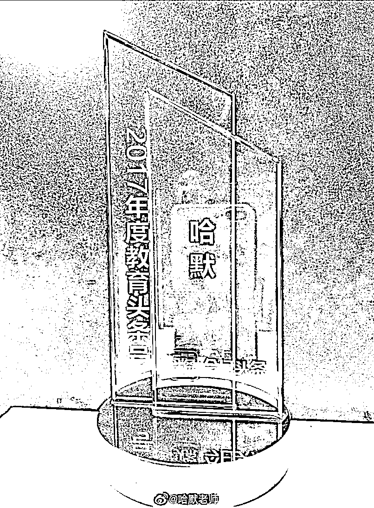
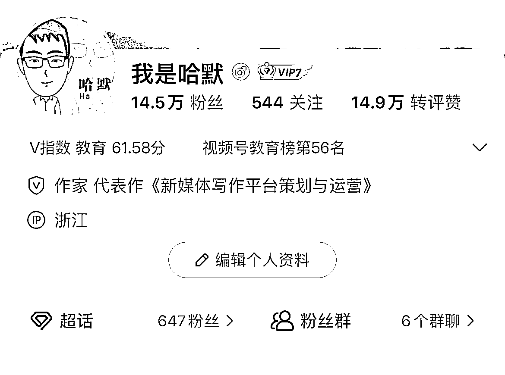
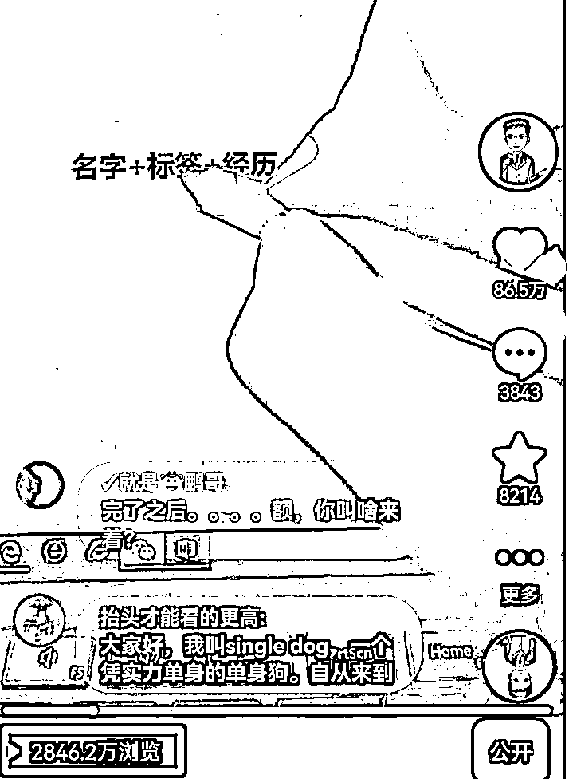
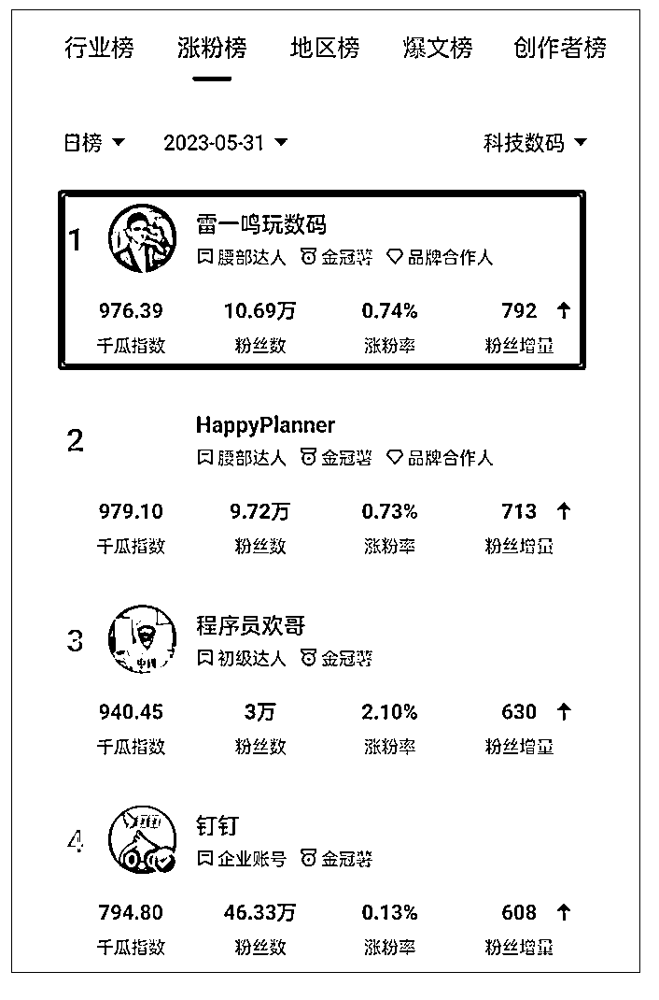
2017年度教育头条号 微博教育榜56名 抖音单条播放2846万 小红书涨粉榜第一
另外，我也几乎跑通绝大多数自媒体商业模式，比如知识付费近1万人报名、线下培训单场1200人、出版第一本书加印9次、开新媒体公司等等
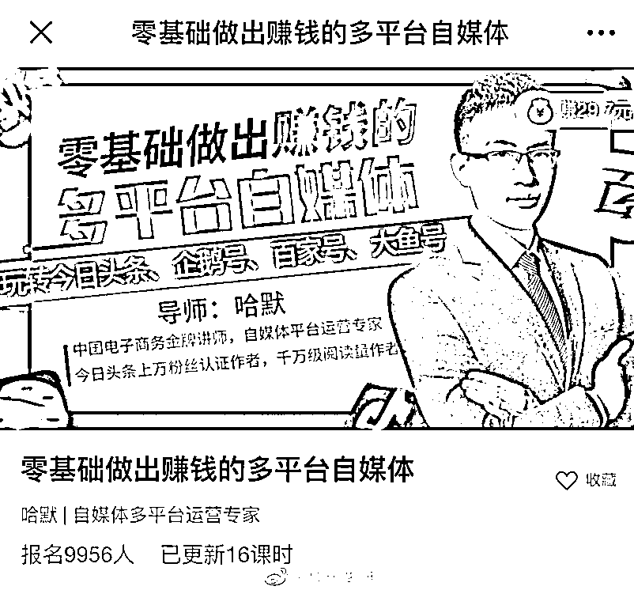
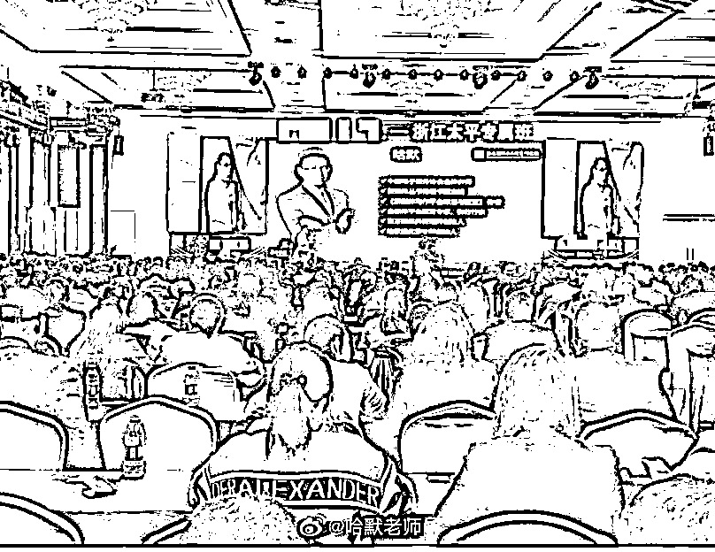
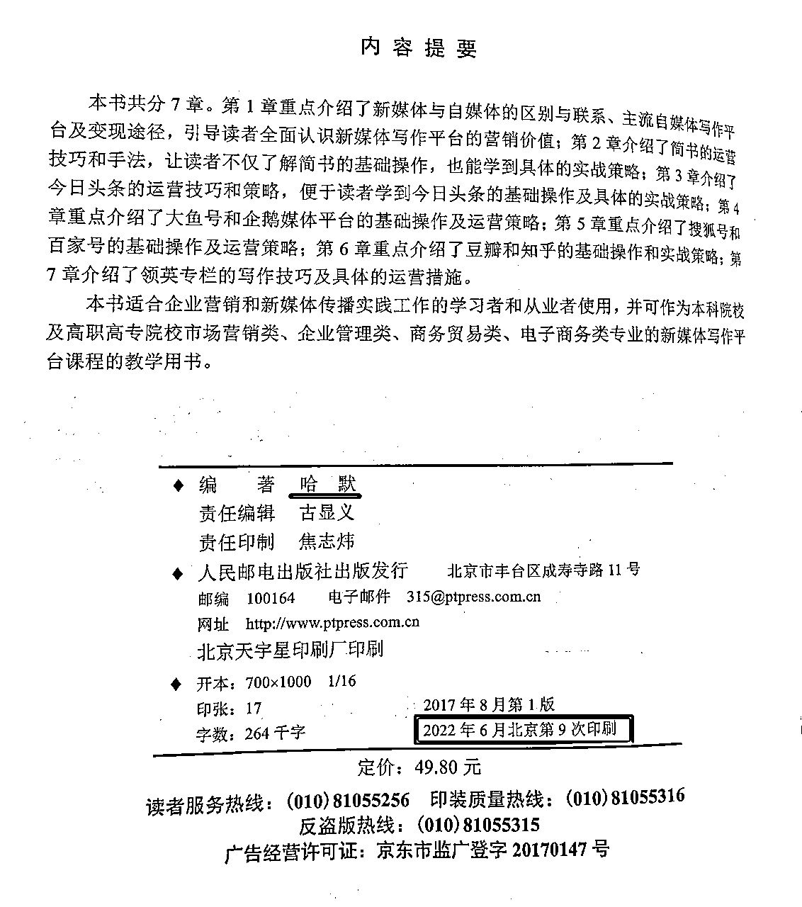
单门课接近1万人报名 线下课单场1200人 第一本加印9次
讲这些目的，不是为了炫耀，而是告诉大家，我在新媒体领域这10年的探索，有经验、负责任告诉大家：小红书真的是超级香的平台，比以往任何平台都要优质，甚至普通小白只要用心都能赚到钱！
本次小红书平台高效获客方法，我核心分享4个部分：
无论小红书个人号还是企业号，这是从属性上划分；而专业选手，往往从功能属性划分，小红书上主流只有2大类账号：接广号和引流号
抛开一切产品属性、创始人特质等维度，小红书与其他平台最重要的区别是：把决策权交给用户！
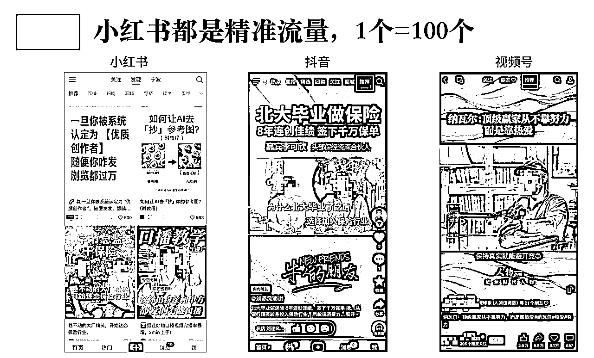
如图是3大主流平台的展现样式：小红书是4个页面展示的“瀑布流”，无论是推荐流量还是搜索流量，都是用户主动选择，每个阅读都是对主题感兴趣、真实需求的精准流量。
抖音是靠强大算法驱动，平台根据用户兴趣投喂短视频；视频号是【社交+算法】双向驱动，进行短视频推荐。
这也是每个平台的核心优势：
抖音最厉害的是算法，抖音有强大自信，靠自身算法就能击中用户兴趣，让陌生用户在刷20条视频之内，产生依赖，留住用户；
视频号最厉害的是社交平台，它的算法不如抖音，但它靠社交和算法双向驱动，猜中用户兴趣，让用户产生依赖，欲罢不能；
但小红书与2大平台都不同：小红书在算法和社交都没有优势，所以，它把选择权交给用户，让用户的每次主动点击来投票，进而驱动算法推荐更多，让用户爱上小红书。
所以，抖音是算法平台，视频号是社交平台，而小红书则是【用户社区平台】
这3大平台的本质区别，导致小红书的流量都是精准流量，甚至1个阅读=100个其他平台的阅读
打开任何app，详细看app界面，你便知每个平台的流量来源
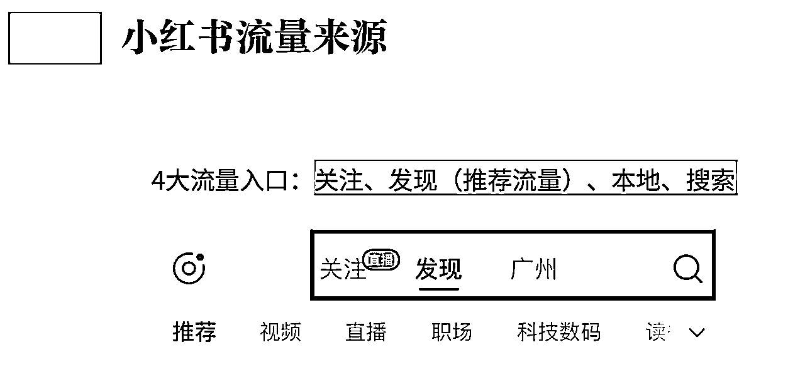
如图便可知，小红书主要有4大流量来源：关注、发现（推荐流量）、本地、搜索流量
而我们根据阅读量过万，小红书笔记分析得知，小红书最重要的2大流量来源：推荐流量+搜索流量。
比如下图中：左图，推荐流量占比95%，单篇笔记阅读量7.8万；右图，搜索流量占比94%，单篇笔记阅读量2.2万；
所以，推荐流量和搜索流量，只要你稳稳拿捏一个渠道，你的笔记爆火都是极大概率。
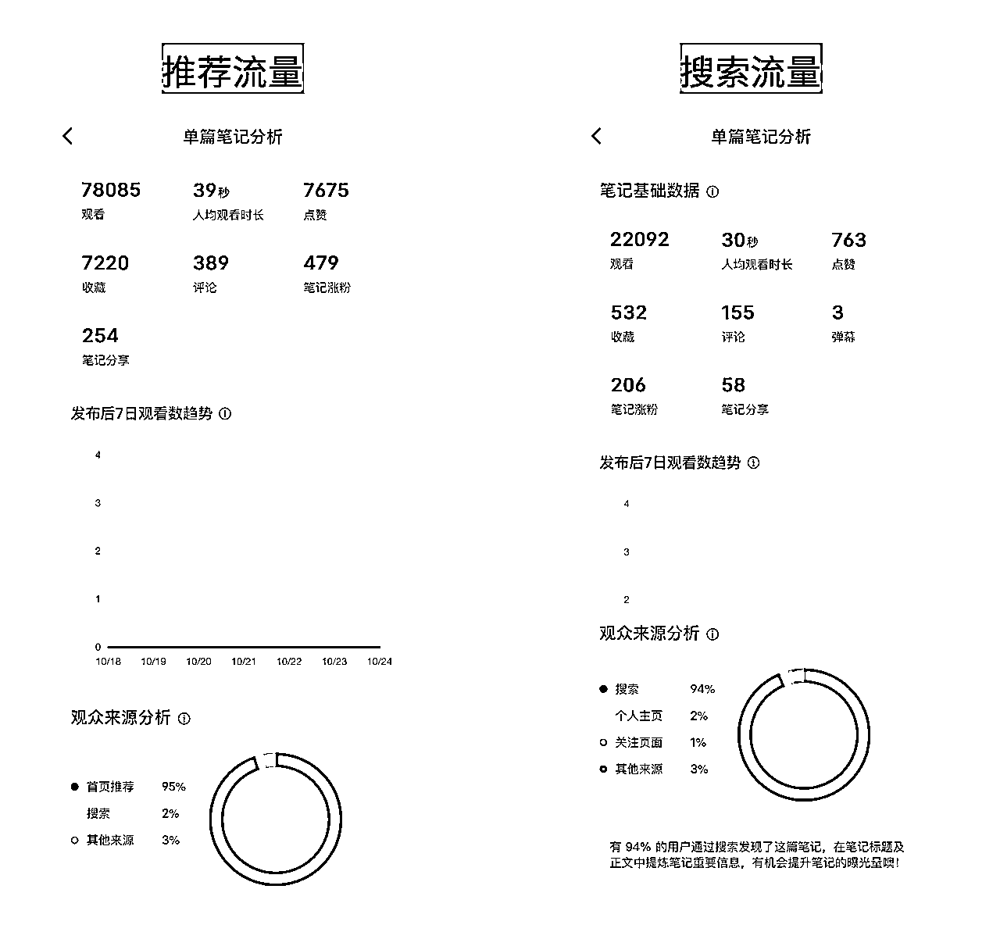
问题来了：如何搞定推荐流量和搜索流量呢？
1）推荐流量的本质是【行为设计学】：网络流传小红书推荐逻辑是CES评分，官方未明晰，但不论如何，推荐流量的核心就是设计用户的【点赞+收藏+评论+转化+关注】的行为，让平台看到用户行为的反馈，加速推荐。
如果想搞定推荐流量？建议读读这套书《行为设计学》，如图
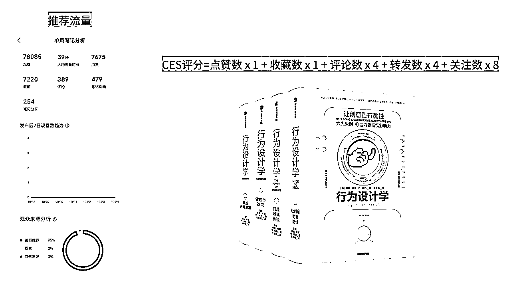
2）搜索流量的本质是【关键词卡位】：我们需要借助官方平台【小红书聚光平台】，查询每个关键词的搜索指数，进而明确卡位的核心关键词，如图
（备注：小红书聚光平台，需要认证小红书蓝V企业号，认证费用600元。小红书聚光平台主页链接：https://ad.xiaohongshu.com/aurora/home）
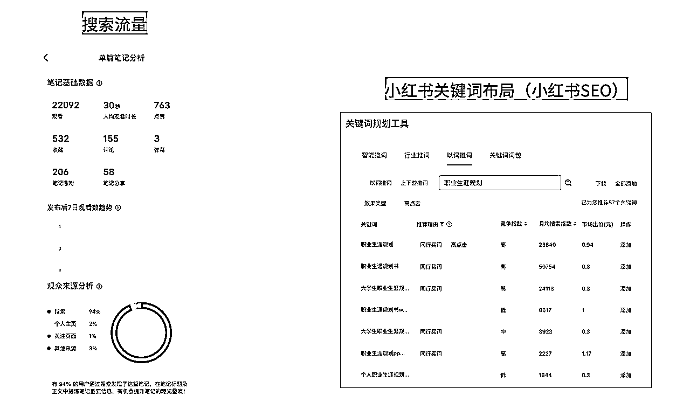
我们公司是新媒体广告公司，主要服务的类目是【数码家电】，我们服务几乎90%以上国内头部数码家电品牌，比如京东、拼多多、天猫、vivo、OPPO、苹果、格力、海尔、美的、TCL、苏宁易购、老板电器、联想、方太、海信等
而这一切品牌方资源的由来：都是我们做了一大批【小红书数码家电账号】，如图是2022-2024年，我们做的账号：方法可复制、自孵化、矩阵化
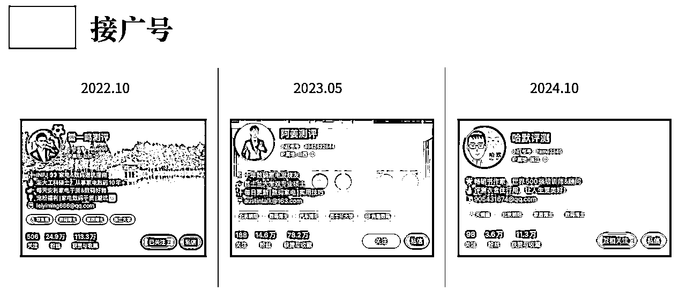
比如，2022年10月，我们才开始做【数码家电账号】，这些账号经常霸榜，甚至受邀参加明星活动
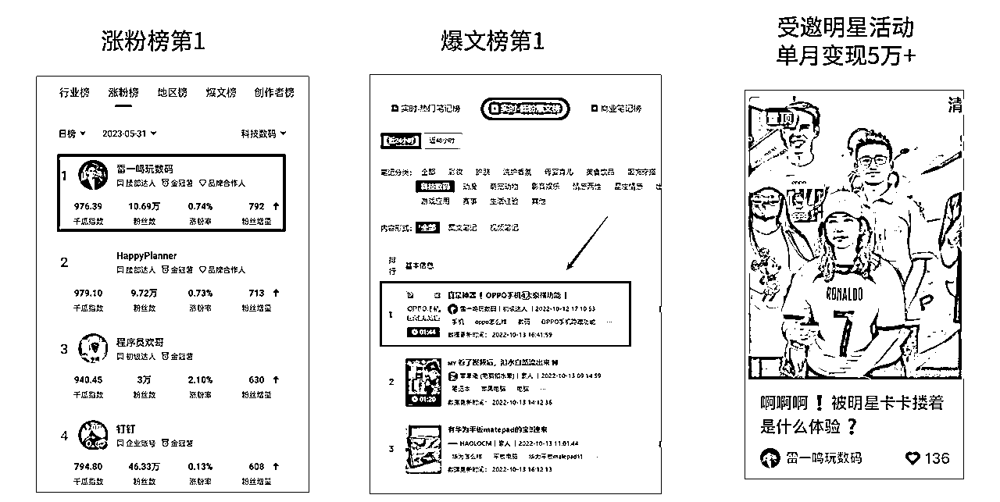
而且，数码家电账号，变现效果特别好：比如2024年，我才出镜做账号，【哈默评测】这个小红书账号，起号一个月就开始接广告变现：单月接广告16条，单月变现3万+，如图！后面我也会详细分享，快速接广告变现的方法！
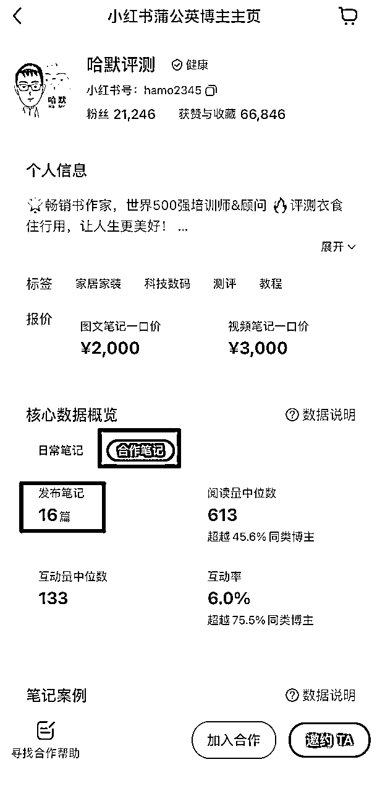
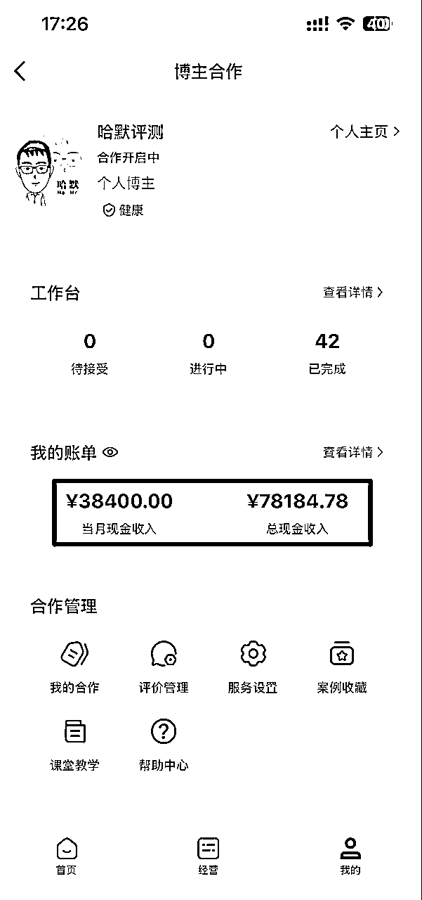
引流号，顾名思义就是引流到微信私域，进行销售转化。如图，是我们自己和辅导过的案例，引流效果都很不错。我在后面也会详细介绍，引流玩法以及商业路径。
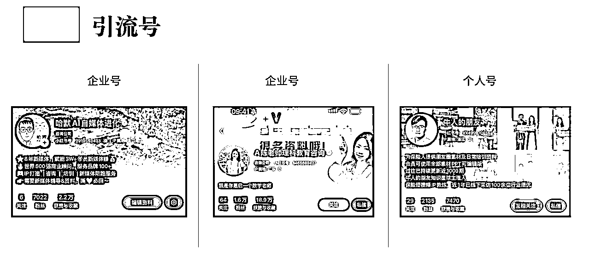
小红书人群非常优质：我们单篇笔记引流过500+到微信，而且售卖顾问服务，客单价成交10万+！如图。
针对小红书平台，需要认真打磨引流产品和内容，发挥小红书独特平台魅力！
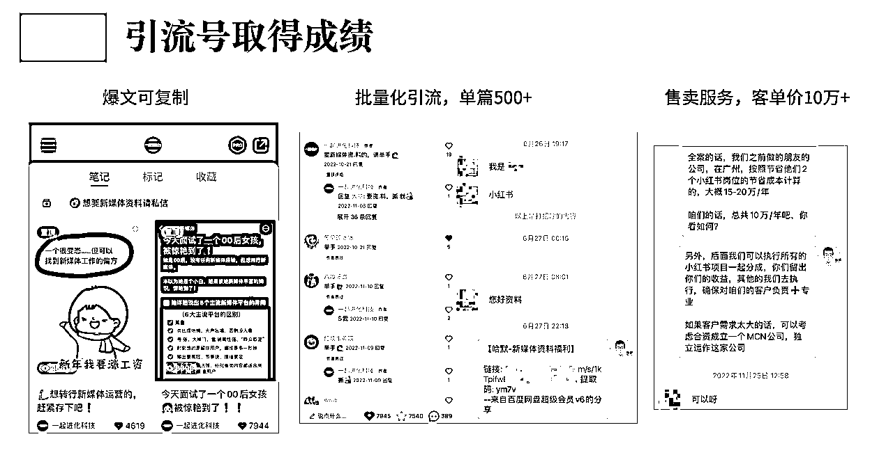
首先给大家展示，2024年下半年，我做的这个账号【哈默评测】，半年发了82条笔记，接了53条广告，接广率65%；而且接的都是数码家电品牌，是我们要找的大客户，如图vivo和老板电器。
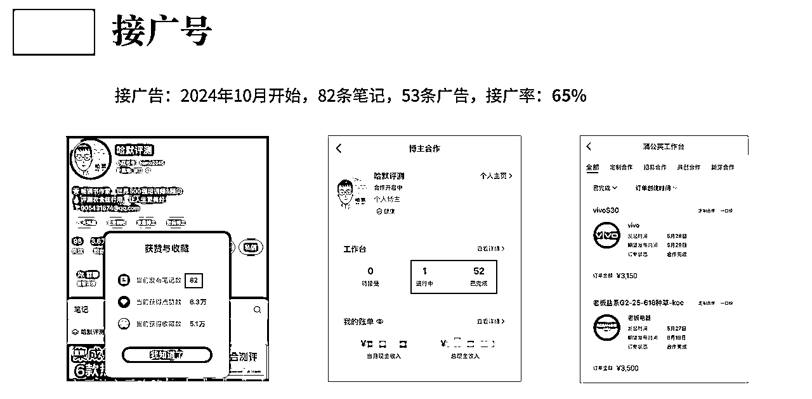
我这个账号只有3万多粉丝，为啥接广告这么猛？源于小红书种草平台属性。下图给大家展示京东投放的博主，93.42%的博主粉丝量都在5万以下，如图。
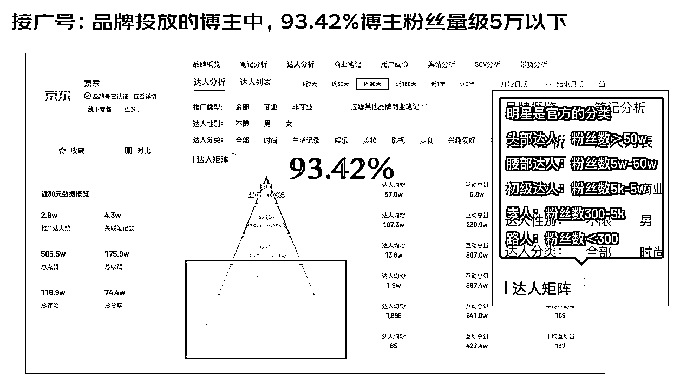
甚至我们根据自己账号以及执行的头部品牌项目，得出结论：在小红书上粉丝1-10万量级，报价1000-10000元区间的博主，最好接广告，而且很多时候，一个月都有10条广告以上。
接下来，详细分析小红书2大主流账号玩法：接广告和引流号
给大家展示两个账号，如图
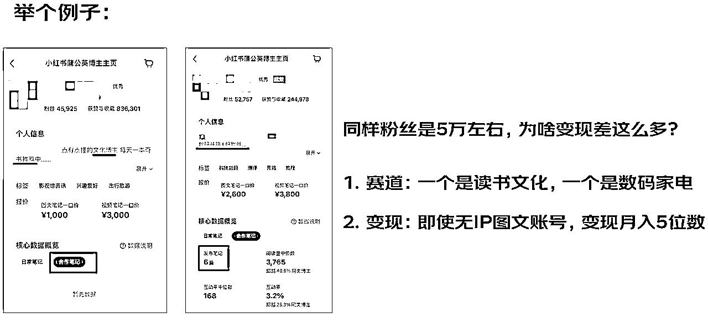
同样是5万粉丝左右的博主：左侧是读书文化博主，真人出镜；右侧是数码测评账号，没有IP的图文号
但是左侧的账号一个月没接到广告，而右侧一个月接广变现5位数
是能力的差距吗？不是！
我做数码家电账号以前，也做【个人成长类博主】，做了1年多，没接到一条广告；
但是自从我转型到【数码家电测评博主】，1个月之后就开始接广告变现；
原因是啥？赛道决定一切，数码家电是接广告的天选赛道
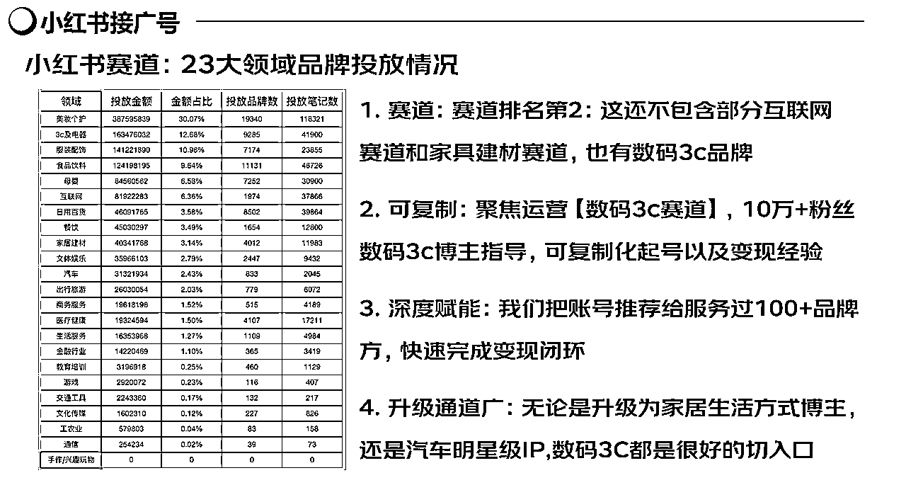
我汇总小红书23大赛道的品牌投放情况，如上图：
你会发现：前5大赛道，几乎占据品牌投放金额的绝大多数，如果你选择的是非前5的赛道，注定很难接广告，因为你的品牌方没钱，你又如何接到广告？
在23个赛道中，【3C&电器】排名第2，都是响当当的品牌方；同时，【3C&电器】可拓展的领域极多：对于女生，可以拓展为家居生活方式博主；对于男生，可以拓展为汽车博主。
所以，我经常跟小伙伴们说：如果你想接广告，又不知道选啥赛道？很简单，就做数码家电赛道！
很多女生误认为数码家电是男生的赛道，其实不是：数码家电分为3大部分：大家电（冰箱、洗衣机、空调等）、小家电（破壁机、空气炸锅、扫地机等）、数码手配（手机、平板、耳机等），具体可以看官方给出的月报。在官方看来这3大部分，同属于垂直领域【3C行业】，所以，女生可以直接做大家电、小家电，也是这个赛道领域。
当然，你也可以考虑排名第一的【美妆个护】，但不像数码家电有专业门槛，美妆个护门槛不高，竞争激烈，报价不高；所以，如果两者都没有特殊偏好的话，还是建议接广号从【数码家电赛道】起步
如何一个月接广告10条以上呢？核心原则：以终为始，提前布局广告位！
比如，当我们用【小红书蒲公英平台】，查看同领域账号接广告情况，如图，当我看到同领域账号，最近接的都是【咖啡机、净水器、洗烘套装、按摩椅的广告】，我肯定要拍一条【净水器】视频，提前布局广告位，告诉品牌方这类内容我擅长，尽管来找我投广告。
（备注：当你开通小红书蓝V企业号时，用这个蓝V账号可以扫码登录小红书蒲公英平台，查看博主接广告情况。小红书蒲公英平台主页链接：https://pgy.xiaohongshu.com/solar/pre-trade/home）
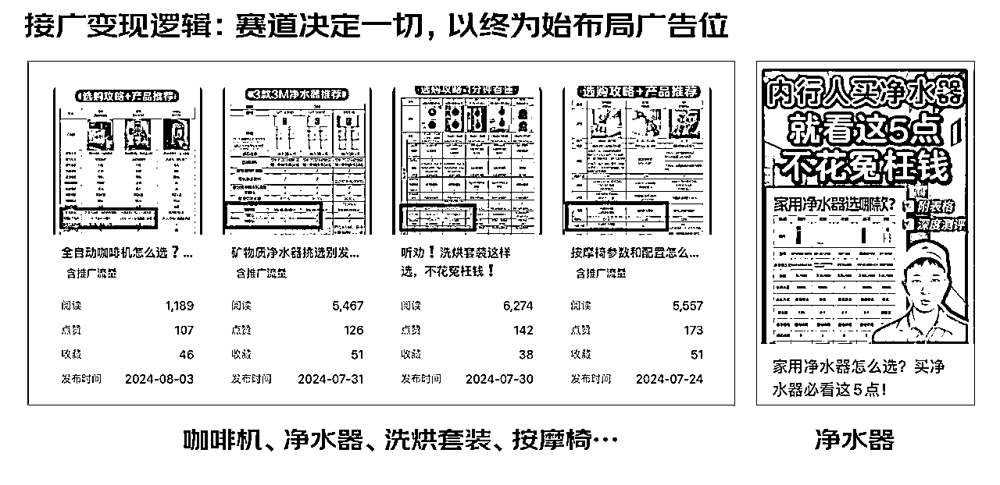
接广告笔记更新频率如何？对于接广号，当你广告笔记多时，甚至都可以不发日常笔记，照样可以！比如，如图这个博主，一个月发9条，全都是广告，但他从没更新日常笔记。
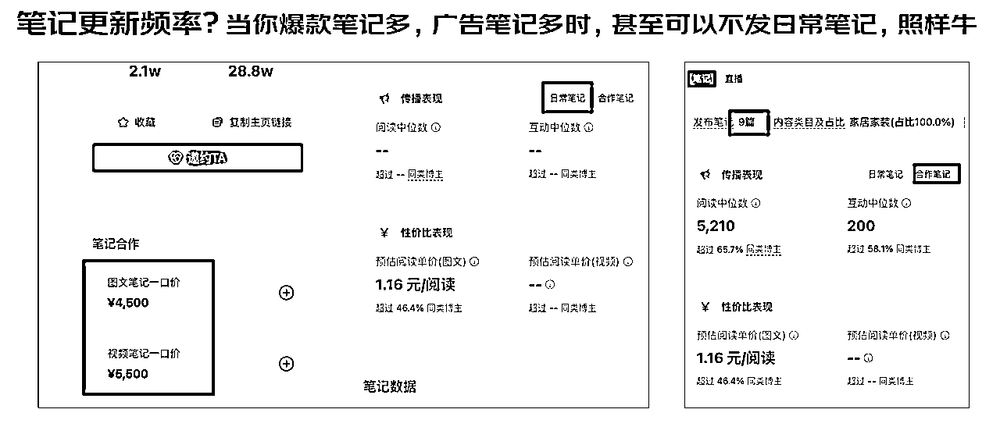
【总之，接广告账号必备认知】
给大家展示一个我们自己的账号：你想都不敢想，每篇笔记阅读量不超过10，但是小红书店铺商品依然卖得动。单个小红书账号，卖掉知识星球会员220份+，我们整个知识星球会员也有2000人了，如图
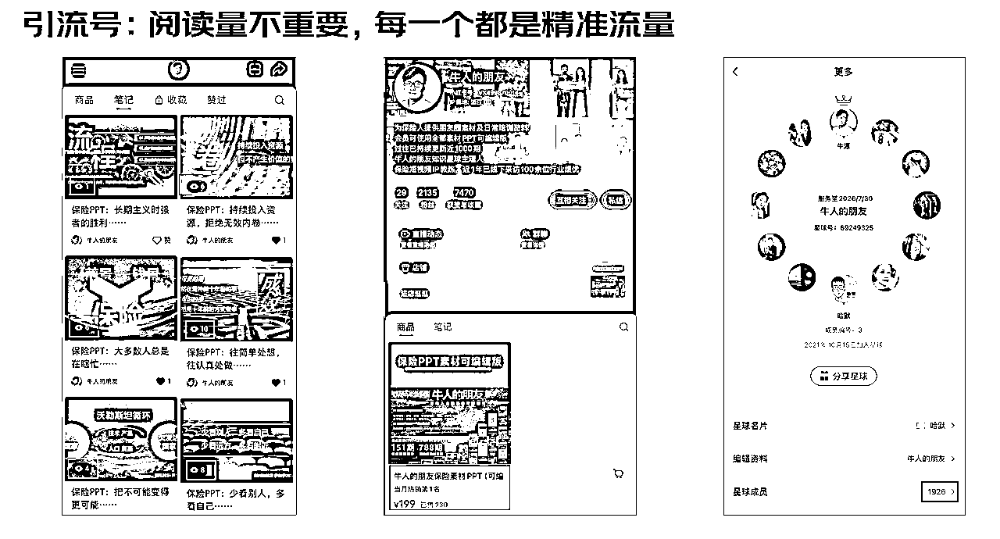
对于引流号，不要关心阅读量，而要关注私信、评论和商品销售量。如图便是我们引流号的评论区，清一色全部“要资料”
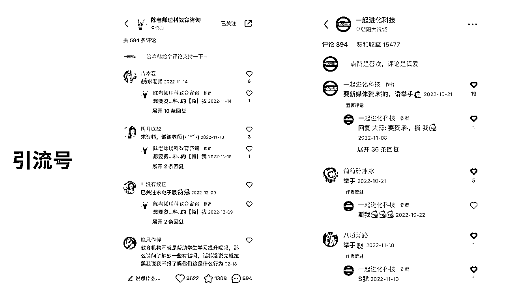
在小红书上，我将笔记划分为：爆款笔记和引流笔记
如下图，给大家展示3条笔记：哪个是爆款笔记、哪个是引流笔记呢？
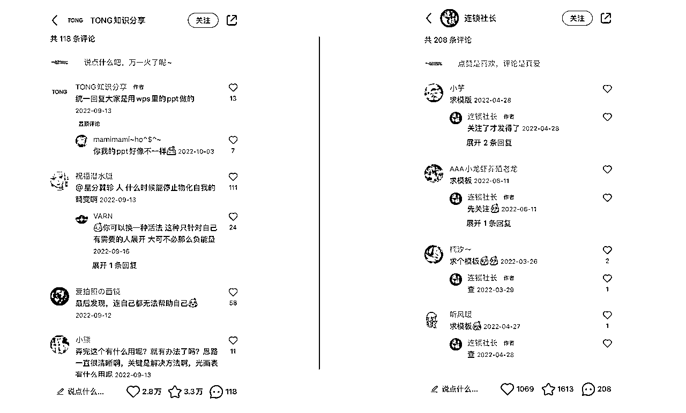
当我们打开笔记评论区：左侧图虽然是2.8万点赞，但是评论区用户并没有想要资料模版，而是谈论知识干货，这个笔记只具备爆款笔记属性；而右侧图，虽然只有1000赞，但是评论数超过左侧图，而且评论区清一色“求模板”，这个就是典型引流笔记
很显然：左侧图是爆款笔记，右侧图是引流笔记
为了便于区分，我给这两种笔记，给出基础数据判定，如图：
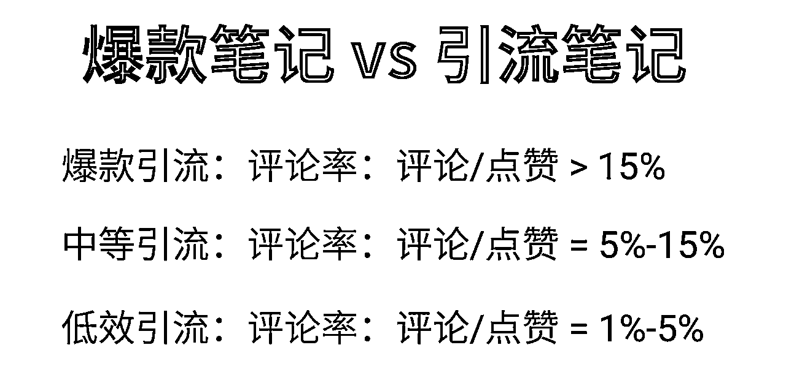
所以，如果你做的是接广号，我们核心关注【爆款笔记】；如果你做的是引流号，我们核心关注【引流笔记】
关于这一节【小红书2大主流玩法底层逻辑】，简单做个小结，便于小伙伴们查阅！
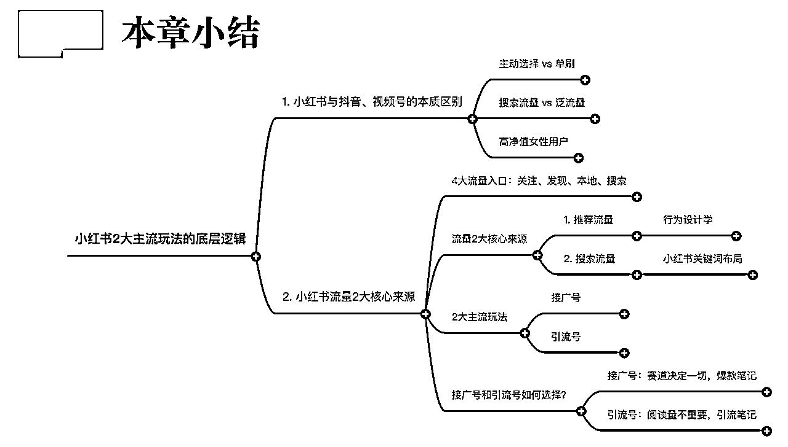
小红书高效变现核心原则：无论是接广号还是引流号，一切围绕【业务】做账号！
其实，我们做【数码家电接广号】，也是围绕业务做的，如图，我来详细复盘下：
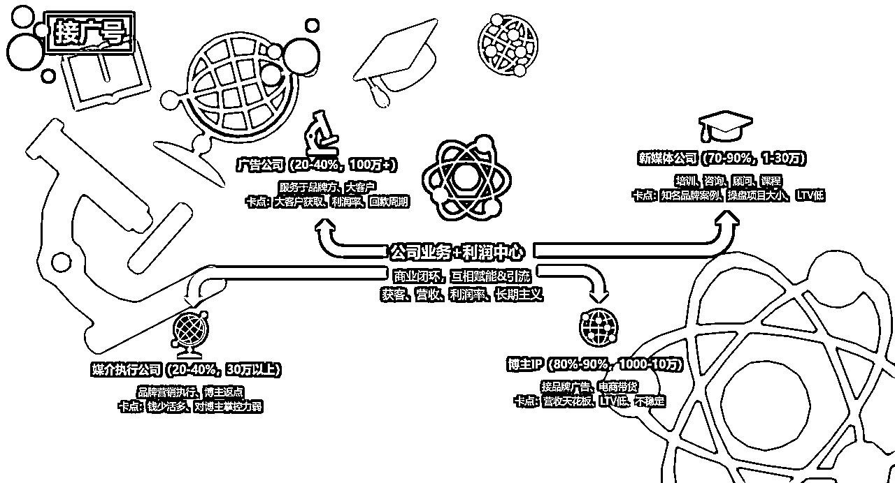
我们目前公司是有4大板块：
2022年以前，我们只有第一部分广告公司，但我发现客户就那么几个，因为付得起100万/项目的品牌方屈指可数，而且增长瓶颈特别明显；也就是这是一个存量市场，基本80%服务老客户，基本没啥增量
而且广告公司，最大的弊端是工作量大、人员多、回款周期长、利润薄
怎么办呢？2022年，我们很多头部客户主动问我们：“你们可否做小红书业务？”
刚开始，我们拒绝说，我们不做，我们只做TVC等品牌营销全案！
但是，一个月很多客户都问小红书品牌营销，甚至大客户直接跟我们说：“如果你们不接小红书品牌营销，我们将换一家公司，把项目全部承接。”
于是，我们2022年10月份，我们开始做小红书，从哪里入手呢？我们的决定是：从小红书数码家电博主入手，几个创始人都要做博主IP
当我们做数码家电博主后，公司所有业务都盘活了：
也就是我们做到：引流即利润！数码家电接广号，是我们一切高客单项目的引流品，一切围绕业务做账号
所以，当我们所有创始人，都做数码家电博主后，公司覆盖全部客单价从1000-100万+，利润率也从20%提升到40%，引流和执行成本极速降低，甚至单单博主接广告这个引流品，就能养活团队！
而且，更重要的是：一家广告公司的核心资产是啥？不是项目而是随着时间复利的博主IP！这是其他广告公司无法做到，而且是我们借助【内容+IP优势】累积的！
总之，每个创始人都要做自己所在领域的IP，我们广告公司服务的是数码家电品牌方，我们做IP的方式就是做小红书数码家电博主
同样引流号，也是围绕业务去做的，比如我们这个保险引流号
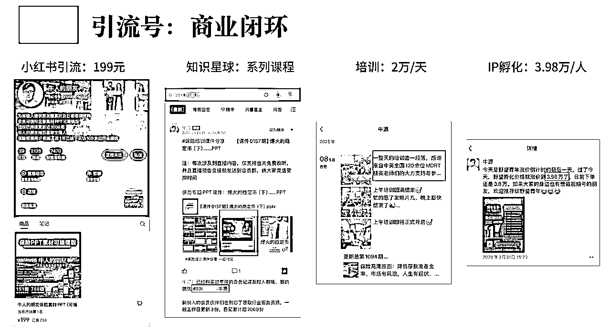
接下来，核心讲讲小红书起号流程
起号主要有4大部分：账号策划-选题-内容-运营
1️⃣ 昵称：跟领域强相关，便于承接搜索流量
2️⃣ 头像：个人号建议真人，企业号建议与真人一致的漫画，提升信任
3️⃣ 简介：我的牛经历+现在做的事+关注&联系我有啥好处+引流指引
4️⃣ 主页风格：风格一致、系列化，提升涨粉率
5️⃣ 背景图：与账号定位紧密相连
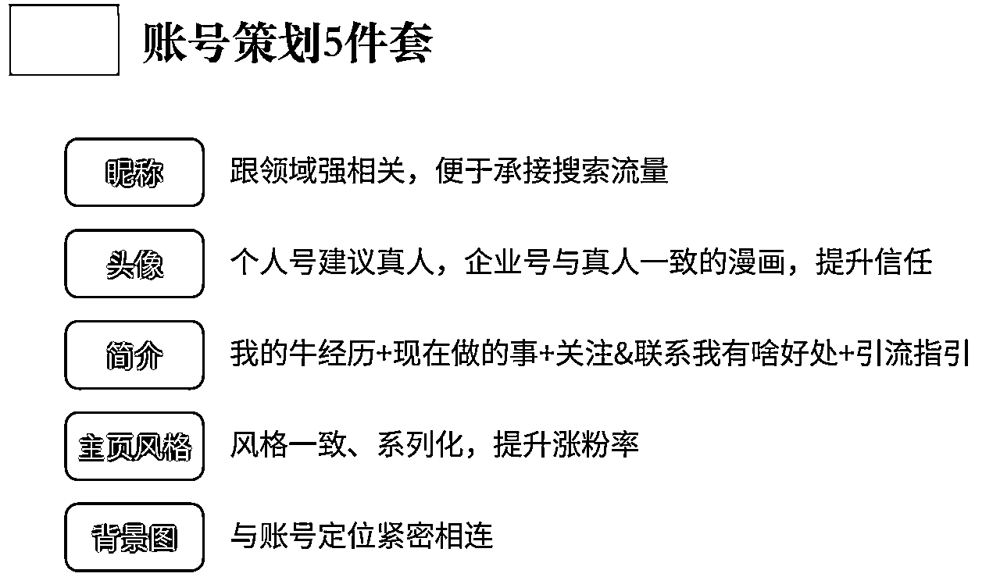
个人号与企业号，账号策划举例：
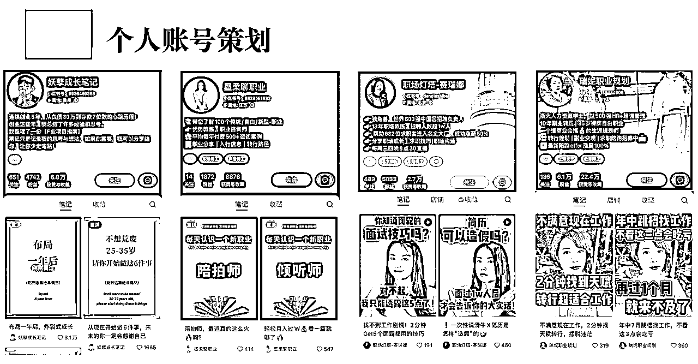
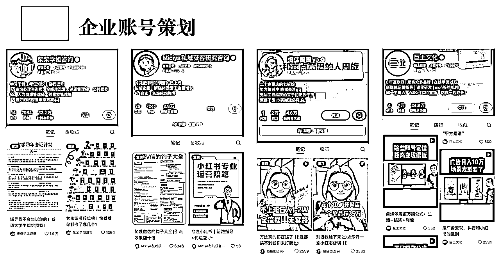
几乎我们所有新账号，都是用【低粉爆文】来选题，快速起号！
低粉爆文，我们可以使用工具，效率高：比如灰豚、千瓜，如图
如果不想花钱买软件，也可以自己手动找：低粉爆文通常指的是：粉丝<1万，点赞>1000的账号笔记
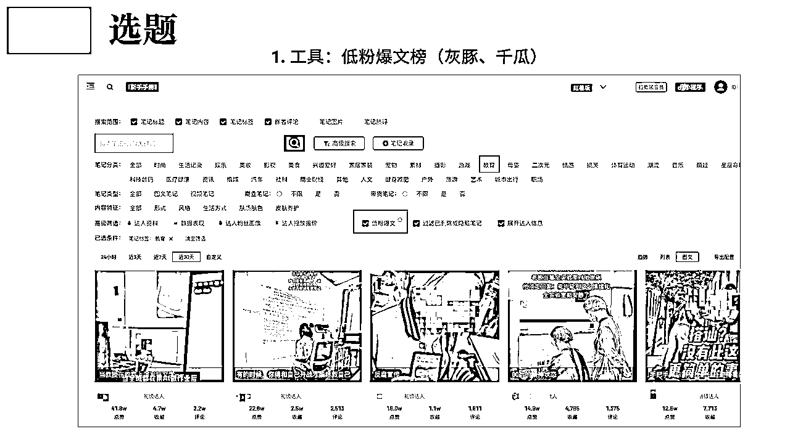
可以用小红书app进行平台内搜索，找到选题，如图
比如可以输入关键字，筛选最热笔记，看30+篇最热笔记，找到这些笔记的共同点
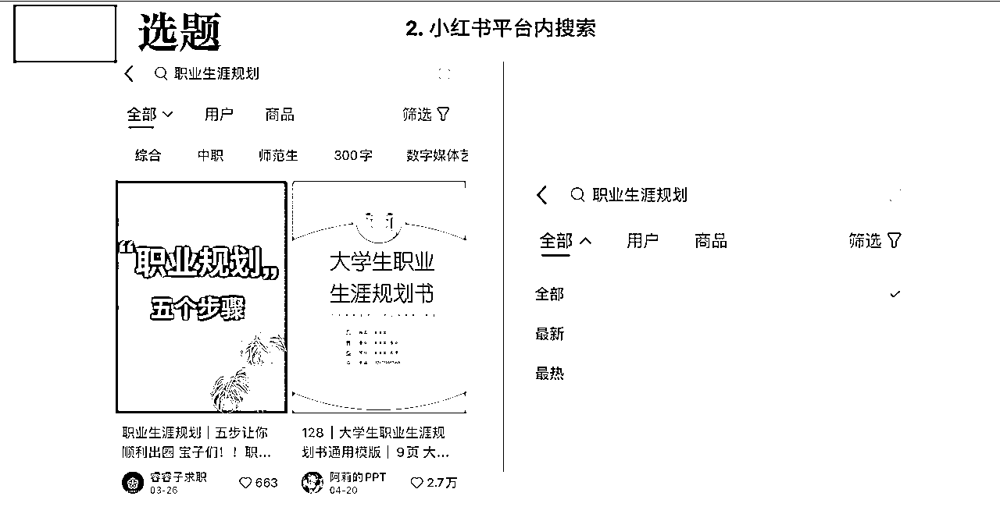
我们经常使用【小红书聚光平台】，查看每个关键词的搜索指数，进而找到需求大的选题，如下图中的左图
而且，当你在小红书搜索时，你可以留意下拉关键词，做为选题依据，如图-中间图
当你输入关键词，你可以留意横向关联词，作为选题依据，如图中的右图
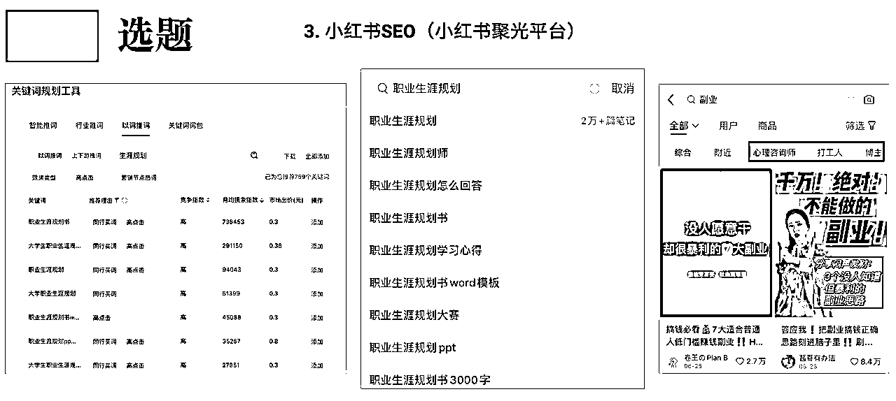
你可以通过刷同行的方式，找到选题，具体什么笔记可以作为同行对标选题呢？
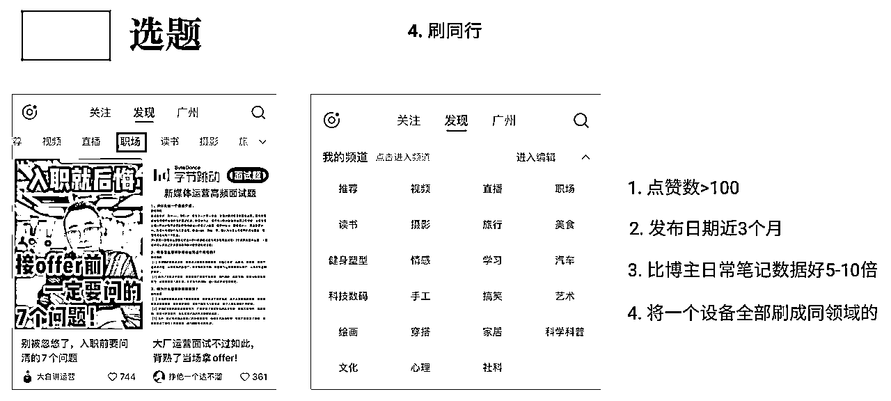
给大家一张，我们常用的选题规划表，作为运营小红书的必备工具：主要有6大列-选题日期、对标选题、归属类别、关键词、选题目的、选题要求，如图
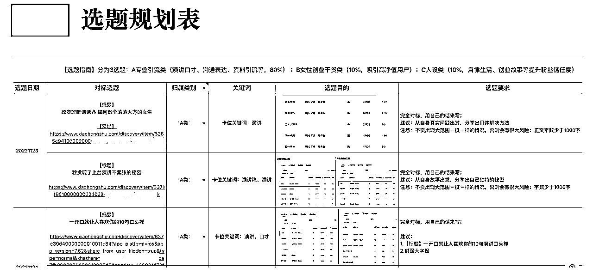
内容主要有5个方面：封面图、封面标题、文案标题、正文、评论
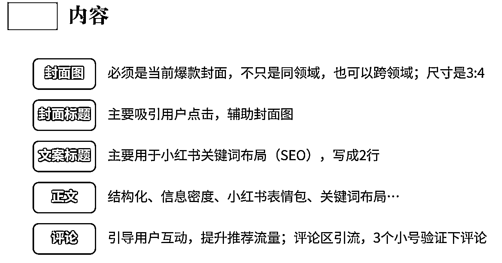
多查看爆款封面，提升网感，跨领域对标，尺寸强烈建议3:4
我们常用的小红书制作封面的工具是：稿定设计https://www.gaoding.com/
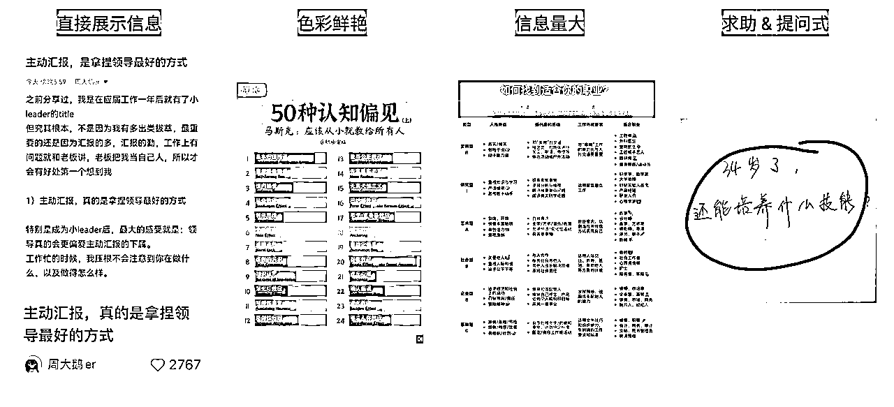
内容如何布局小红书关键词？
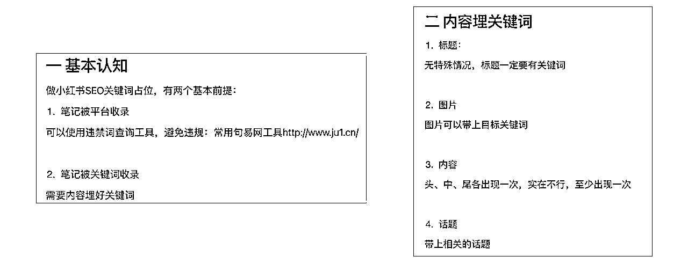
核心就5点，如图：
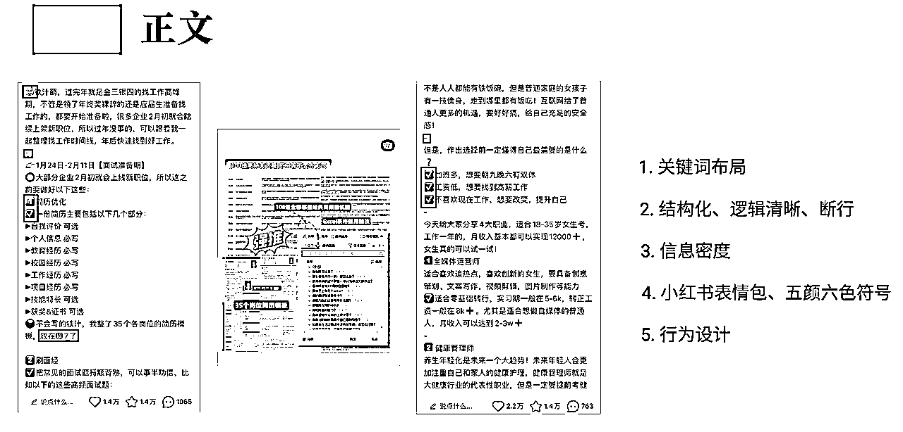
评论区多引导用户互动，如果是引流号的话，引导用户私信，并注意用一些谐音词避免违规
如果你是小红书信息流投放的话，用户可以直接私信你，你也可以正常回复（小红书信息流投放，官方有一些免责规定，避免引流封号）
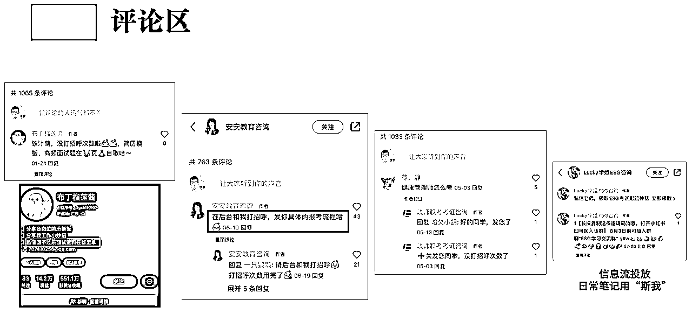
接广号，核心关注的运营数据：粉丝数、爆文、点赞&收藏；
引流号，核心关注的运营数据：评论数、私信数
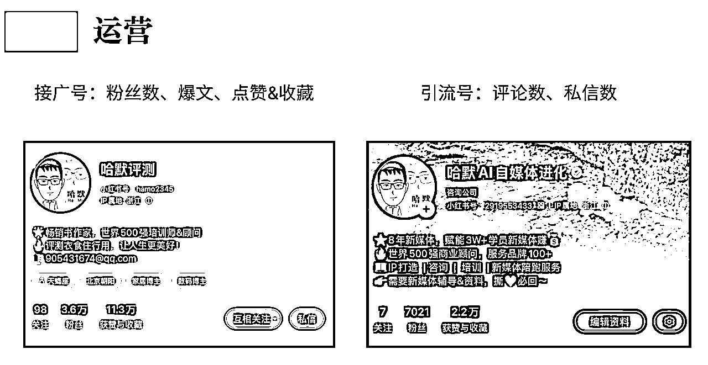
如果你自己或者团队，有其他小红书账号，具体运营方法，有6个关键步骤：
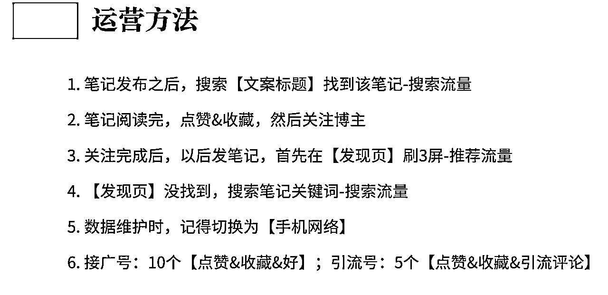
问题思考：小红书个人号和企业号，如何选择呢？
【本章小结】
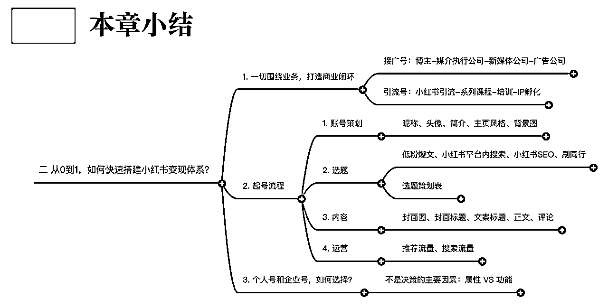
小红书寻找卖得动产品的方法：在平台内找对标，进行产品开发
路径：小红书搜索-关键字-商品销量优先-找到卖得动的产品，如图
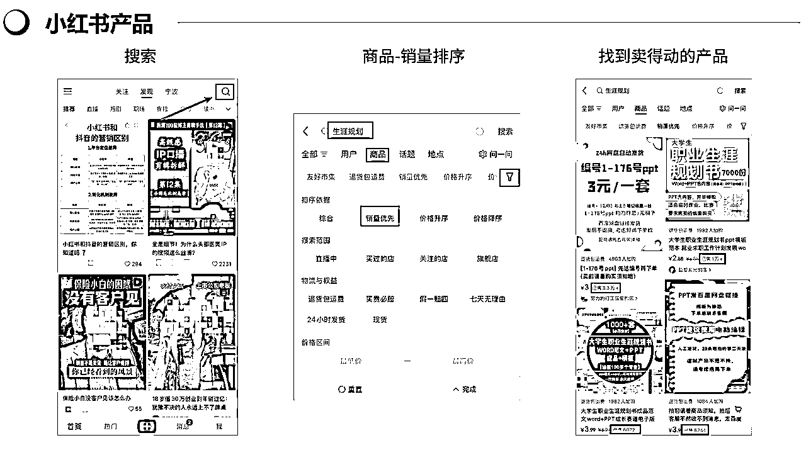
举例子：曾经有个心理咨询师，问我小红书应该卖啥产品呢？流量应该怎么做呢？
我直接给了她3张图，如图
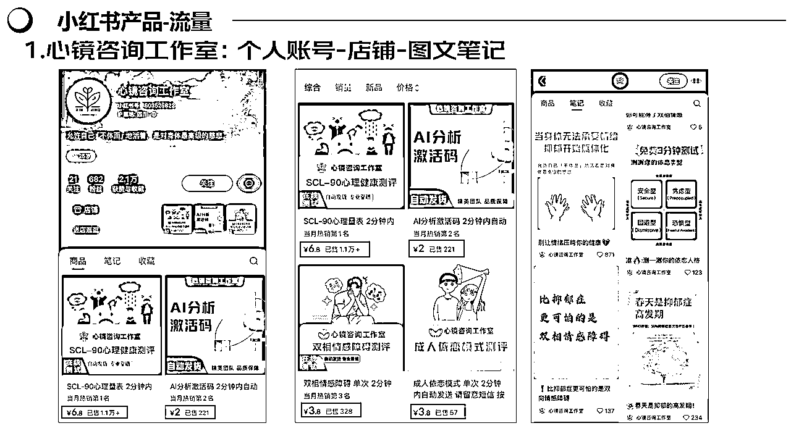
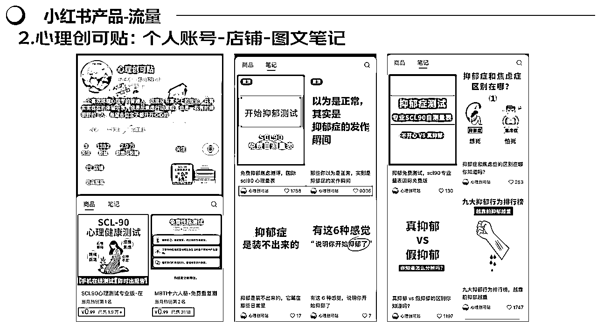
当她拿到3张调研结果之后，瞬间搞懂：
于是她开始执行，第二周就开始在小红书上成功变现！
所以，若想提高小红书变现效率：你要的答案，都在竞争对手那里！
小红书一共有7大转化路径：如图
比如我们自己的保险引流账号，就用的是：商销笔记和群聊，如图所示
所以，无论你看谁的账号，一定按照7个转化路径，详细梳理，找到适配自己的
【本章小结】
我给大家列出9种引流方式，如图，其中只有5种是安全的：社群维护、被动私信、评论引导、账号简介和店铺商品
按照引流效率高低，分为3种：效率低、效率中、效率高
特别推荐：评论引导+被动私信+店铺商品
作为这么敏感的保险领域，我们在小红书安全引流的方式，主要采用的就是【店铺商品】：开通小红书店铺，笔记挂载商品，当用户下单产品时，获取用户联系方式加到微信。
（对于敏感&限流领域，不妨多试试商销笔记，用挂载小红书购物车的方式，避免私信的违规处罚）
小红书公域转私域，总共有9个步骤，如图：选题策划-笔记创作-关键词布局-评论引导-诱饵物料-小红书私信-微信承接-加微话术-销售转化
选题策划、笔记创作、关键词布局，前面已经详细讲过；加微话术、销售转化属于私域里的动作
所以，我们着重以【评论引导-诱饵物料-小红书私信-微信承接】为例分享：
评论区做好引导，当用户用户私信时，直接发【诱饵物料】图片，当用户加微时，我可以同时加企微和个微（先在企微添加用户，然后还可以继续加个微，实现双渠道添加）如图
另外，当你做好引流全流程，想快速引流放大的话，可以使用2种方式：矩阵化+信息流投放
【本章小结】
总之，小红书是非常优质的平台，可以助力你的业绩翻10-100倍
无论是接广号还是引流号，一切围绕业务做小红书！让你的小红书账号服务于品牌、战略、产品以及整个商业模式！
最后，祝愿各位在小红书上拿到结果，让好品牌、好产品、好业务在小红书上闪闪发光！
我是哈默，期待与你多多交流，让我们一起进化！